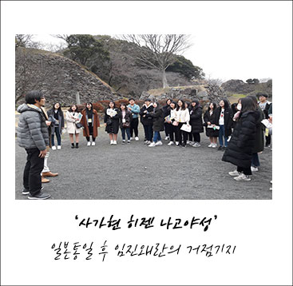

중국청소년국제교류
중국 청소년 국제교류
“중국 국제 청소년 교류활동은 송경령 기금회의 주관으로 북경, 상해, 하북성 내 대초원에서 서로 다른 나라의
청소년들과 함께 어우러져 다국적 우정을 만들고 세계시민으로 국제화를 이루어 가는 새로운 체험활동”
중국 청소년 국제교류 캠프는 1999년부터 지속적인 청소년 교류활동을 연계한 청소년 국제교류 활동으로 해마다
그 규모가 커지고 있습니다. 2016년에는 5대양 6대륙에 있는 27개국의 청소년들이 함께 우정을 만드는 교류활동이 진행되었습니다.
한 · 중 ·일 3개국의 내몽고 초원탐험을 시작으로 진행된 교류활동은 중국 청소년 단체인 송경령기금회가 주관하는 행사로, 중국의
독특한 자연환경 초원에서 위대한 자연에 도전하며 거대한 중국역사 문화체험, 각 국의 문화교류활동 등 다양한 경험의 기회를
갖게 하는 활동이라 할 수 있습니다.
일본 속 한국의 역사기행
일본 속 한국의 역사기행
“청소년들이 직접 임진왜란과 일제강점기 때의 역사현장을 둘러보고
올바른 역사 인식을 심어나가는 역사기행”
일본 속 한국의 역사기행은 국내 고등학교와 연계하여 부산항에서 일본 규슈로 이동하면서 시작됩니다.
임진왜란의 대륙 침략의 거점이 된 히젠 나고야성과 그리고 타가와 탄광마을, 한국인 징용희생자 위령비, 군함도,
아리타 도자기 마을, 후쿠오카 형무소 옛터 등 일제강점기의 실제 유적지를 돌아보며 청소년들은 역사에 대한 인식을 새롭게
정립해 나가게 되며, 역사기행을 통해 우리의 문화를 소중히 하고 주체성 있는 역사관을 갖도록 하는 프로그램입니다.
